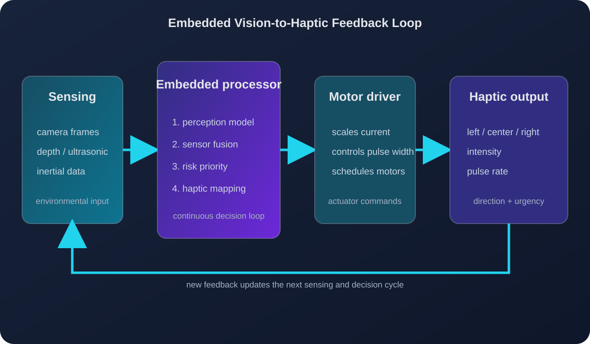

Haptic feedback and embedded systems
Turning Visual Information into Touch
Haptic feedback is the communication layer between the system and the wearer. After computer vision estimates the location and behavior of objects, an embedded processor converts those estimates into actuator commands. Motor location can communicate direction, vibration intensity can communicate proximity, and pulse frequency can communicate urgency or motion.
Embedded-system architecture
A vision-guided haptic device can be divided into sensing, perception, decision-making, actuation, and power-management stages. A camera captures the environment and sends frames to a processor. The processor runs the computer-vision model and can combine its output with measurements from ultrasonic or inertial sensors. It then ranks the detected objects and selects the most important feedback signal.
The embedded computer or microcontroller sends actuator commands to a motor driver. The driver supplies the current required by the vibration motors while the processor continues receiving new sensor data. This creates a continuous loop in which new visual estimates can update the direction, intensity, and urgency of the vibration.

Figure 1. Embedded architecture for converting camera and sensor estimates into directional vibration. Diagram made with assistance from ChatGPT.
How should information be encoded?
A haptic code assigns physical properties of vibration to properties of the visual scene. Left, center, and right actuators can represent the horizontal position of an obstacle. Distance can control vibration intensity, with a nearby obstacle producing a stronger signal than a distant obstacle. Motion and collision risk can control pulse frequency, with faster or repeated pulses indicating greater urgency.
The system should not communicate every detected object at the same time. Instead, it should rank objects according to risk and select the most relevant signal. Virtual Whiskers demonstrates a related design principle by using separate haptic modes to communicate either a traversable path or the location of prominent obstacles [2].
Interactive haptic demonstration
Move the sliders to see how the proposed encoding changes.
Example algorithm
The following rule-based algorithm demonstrates how visual estimates can be converted into actuator behavior. It is simplified, but it shows the relationship between direction, distance, motion, and risk.
function encode_haptic_feedback(object):
motor = choose_motor(object.horizontal_position)
if object.distance < 0.75:
intensity = "strong"
pulse_rate = "fast"
else if object.distance < 1.5:
intensity = "medium"
pulse_rate = "moderate"
else:
intensity = "weak"
pulse_rate = "slow"
if object.motion_toward_user:
pulse_rate = increase(pulse_rate)
if object.collision_risk > 0.80:
pulse_repetition = "continuous"
else:
pulse_repetition = "intermittent"
activate(motor, intensity, pulse_rate, pulse_repetition)The algorithm first chooses a motor based on horizontal position. It then maps distance to intensity and pulse rate. Motion toward the wearer increases urgency, while collision risk determines whether the pattern is intermittent or continuous. A real system would also use smoothing, confidence thresholds, and limits on simultaneous motor activation.
Design alternatives
Rule-based encoding is easy to implement, explain, and test. It is appropriate for an early prototype because each vibration can be traced to a specific condition. However, fixed thresholds may not work equally well in every environment or for every wearer.
Fuzzy-logic systems can represent intermediate conditions, such as an obstacle that is somewhat close or moving slowly toward the wearer. Sensor fusion can improve reliability by combining camera estimates with ultrasonic, inertial, or depth measurements. Learned haptic policies may discover more complex mappings, but they require representative training data and are more difficult to verify for safety.
A practical system could combine these approaches. A learned model could estimate the scene while a rule-based safety layer limits the possible actuator commands. Vis2Hap and other vision-to-haptic systems also show that the output does not have to be limited to obstacle alerts; visual input can be used to generate haptic descriptions of physical properties [3].